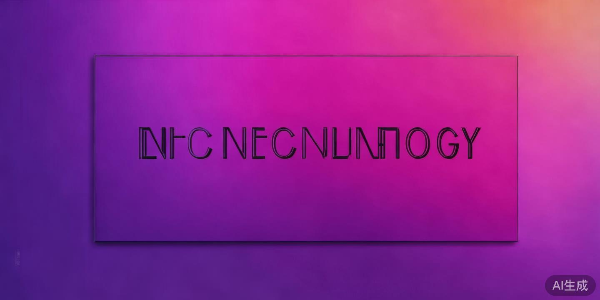
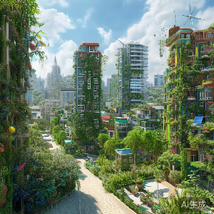
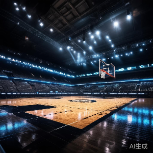

科技
2小时前
人工智能技术迎来新突破，大型模型性能提升30%
最新研究表明，新一代人工智能模型在多项基准测试中取得突破性进展，性能比上一代提升了整整30%，为未来应用开辟了更多可能性...
1.2k
36

最新研究表明，新一代人工智能模型在多项基准测试中取得突破性进展，性能比上一代提升了整整30%，为未来应用开辟了更多可能性...
越来越多年轻人开始关注环保，选择可持续的生活方式，从日常点滴做起...

最新经济数据显示，全球多个主要经济体都出现了明显的复苏迹象，失业率下降，消费回升，投资者信心正在逐步恢复...
新一届国家队集训名单公布，多位年轻球员入选，新主教练带来全新战术理念...

备受期待的年度大片即将在全国上映，导演和主演们在发布会上分享了许多拍摄过程中的有趣故事和不为人知的细节...